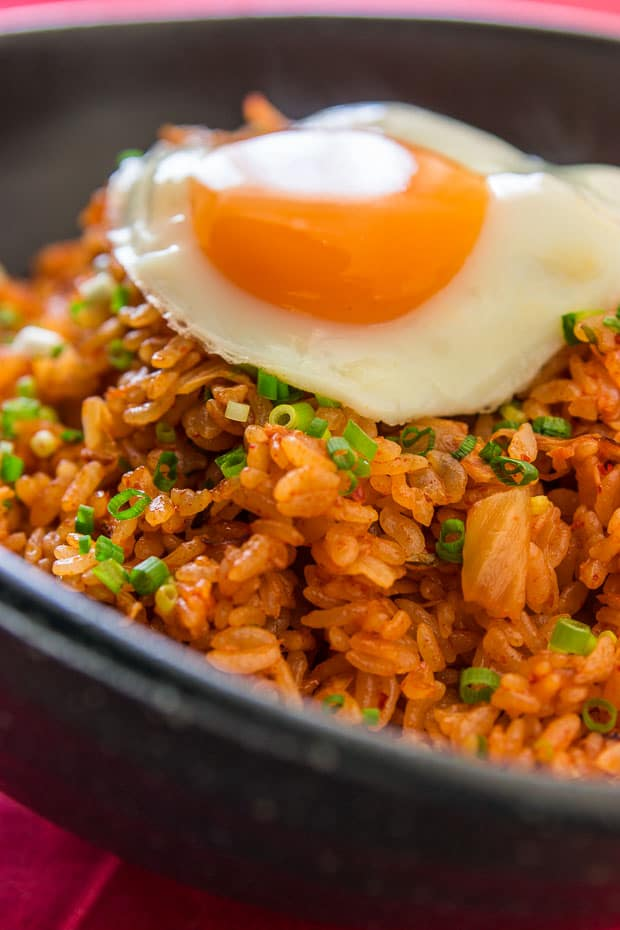

Kimchi Fried Rice

A simple yet delicious rice dish
This is a very simple and quick fried rice recipe that you can make using left over white rice and Kimchi,
the traditional Korean side dish of salted and seasoned fermented vegetables.
Spice up the dish by using different kinds of kimchi and/or incorporating processed meat like, sausages
and spam. Even better by serving with a sunny side up egg on the top!
Ingredients
- 1 tablespoon butter
- 1 tablespoon olive oil
- 3 drops sesame oil, or to taste
- ¼ cup diced onion
- ½ cup cubed, fully cooked ham/li>
- ⅓ cup chopped kimchi
- 1 teaspoon garlic powder
- 2 cups cooked rice
- 1 tablespoon soy sauce
- 1 tablespoon gochujang (Korean chile paste)/li>
- salt and ground black pepper to taste
Steps
- Warm butter and olive oil together over medium-high heat in a large skillet or wok.
Add in sesame oil. Add onion and scallions and cook until onion is translucent, about 2 minutes.
Mix in cubed ham and kimchi; cook for 1 more minute. Season with garlic powder.
- Stir in rice and cook until mixture is heated throughout. Drizzle soy sauce over top and mix
in gochujang. Stir until well combined and adjust seasoning with salt and pepper.